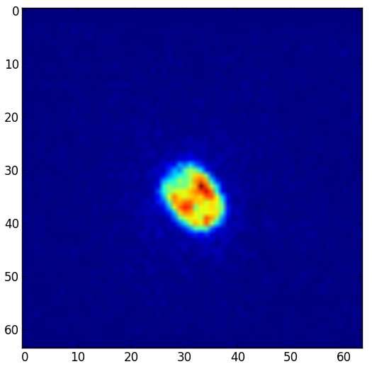
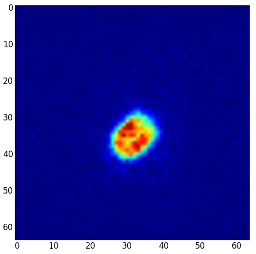

Python 處理醫學影像 - 以 SPECT 為例
Department of Nuclear Medicine, Kaohsiung Veterans General Hospital
Sin-di Lee
Background picture: Stamen / Map data: OSM and its contributors

2014-03-10 Kaohsiung.py
Department of Nuclear Medicine, Kaohsiung Veterans General Hospital
Sin-di Lee
Background picture: Stamen / Map data: OSM and its contributors
Wikipedia, CC-BY-SA 3.0
64個 projections 中第1張
64個 projections 中第16張
高雄榮民總醫院核子醫學部 Phantom study
import dicomimport pylabimport numpy as npds = dicom.read_file("img.dcm")pylab.imshow(ds.pixel_array[0,:,:])pylab.show()
高雄榮民總醫院核子醫學部 Phantom study
import dicomimport pylabimport numpy as npds = dicom.read_file("img.dcm")pylab.imshow(ds.pixel_array[:,30,:])pylab.show()
高雄榮民總醫院核子醫學部 Phantom study
import dicomimport pylabfrom skimage.transform import iradonimport numpy as npds = dicom.read_file("img.dcm")sinogram = numpy.transpose(ds.pixel_array[:,35,:])reconstruction = iradon(sinogram)pylab.imshow(reconstruction)pylab.show()
array = ds.pixel_arrayrecon_3d = numpy.zeros((64,64,64))for i in range(0,63):recon_3d[i,:,:] = iradon(np.transpose(array[:,i,:]), output_size=64)
pylab.imshow(recon_3d[:,32,:])pylab.show()
高雄榮民總醫院核子醫學部 Phantom study
pylab.imshow(recon_3d[:,:,30])pylab.show()
高雄榮民總醫院核子醫學部 Phantom study
ds.dir # 呈現所有欄位ds.PixelSpacing # pixel sizepixel_size= ds.PixelSpacing[1]/10 # read pixel sizepixel_volume= pixel_size**3
ROI = np.zeros((64,64,64)) # create a blank ROI arraymaximal = np.max(recon_3d) # 先讀最大值for i in range(0,63):for j in range(0,63):for k in range(0,63):if recon_3d[i,j,k] > 0.5*maximal:ROI[i,j,k]= 1np.sum(ROI[:,:,:])*pixel_volume
{kind=link}